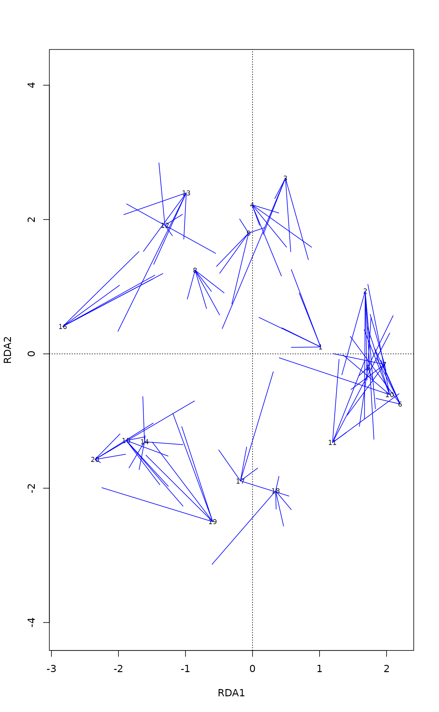

Simulate Responses with Gaussian Error or Permuted Residuals for Constrained Ordination
simulate.rda.RdFunction simulates a response data frame so that it adds
Gaussian error to the fitted responses of Redundancy Analysis
(rda), Constrained Correspondence Analysis
(cca) or distance-based RDA (capscale).
The function is a special case of generic simulate, and
works similarly as simulate.lm.
Usage
# S3 method for class 'rda'
simulate(object, nsim = 1, seed = NULL, indx = NULL,
rank = "full", correlated = FALSE, ...)Arguments
- object
- nsim
number of response matrices to be simulated. Only one dissimilarity matrix is returned for
capscale, and largernsimis an error.- seed
an object specifying if and how the random number generator should be initialized (‘seeded’). See
simulatefor details.- indx
Index of residuals added to the fitted values, such as produced by
shuffleSetorsample. The index can have duplicate entries so that bootstrapping is allowed. Ifnsim\(>1\), the output should be compliant withshuffleSetwith one line for each simulation. Ifnsimis missing, the number of rows ofindxis used to define the number of simulations, but ifnsimis given, it should match number of rows inindx. If null, parametric simulation is used and Gaussian error is added to the fitted values.- rank
The rank of the constrained component: passed to
predict.rdaorpredict.cca.Are species regarded as correlated in parametric simulation or when
indxis not given? Ifcorrelated = TRUE, multivariate Gaussian random error is generated, and ifFALSE, Gaussian random error is generated separately for each species. The argument has no effect incapscalewhich has no information on species.- ...
additional optional arguments (ignored).
Details
The implementation follows "lm" method of
simulate, and adds Gaussian (Normal) error to the fitted
values (fitted.rda) using function rnorm
if correlated = FALSE or mvrnorm if
correlated = TRUE. The standard deviations (rnorm)
or covariance matrices for species (mvrnorm) are
estimated from the residuals after fitting the constraints.
Alternatively, the function can take a permutation index that is used
to add permuted residuals (unconstrained component) to the fitted
values. Raw data are used in rda. Internal Chi-square
transformed data are used in cca within the function,
but the returned matrix is similar to the original input data. The
simulation is performed on internal metric scaling data in
capscale, but the function returns the Euclidean
distances calculated from the simulated data. The simulation uses
only the real components, and the imaginary dimensions are ignored.
Value
If nsim = 1, returns a matrix or dissimilarities (in
capscale) with similar additional arguments on random
number seed as simulate. If nsim > 1, returns a
similar array as returned by simulate.nullmodel with
similar attributes.
See also
simulate for the generic case and for
lm objects, and simulate.nullmodel for
community null model simulation. Functions fitted.rda
and fitted.cca return fitted values without the error
component. See rnorm and mvrnorm
(MASS package) for simulating Gaussian random error.
Examples
data(dune)
data(dune.env)
mod <- rda(dune ~ Moisture + Management, dune.env)
## One simulation
update(mod, simulate(mod) ~ .)
#> Call: rda(formula = simulate(mod) ~ Moisture + Management, data =
#> dune.env)
#>
#> Inertia Proportion Rank
#> Total 79.5771 1.0000
#> Constrained 52.1325 0.6551 6
#> Unconstrained 27.4445 0.3449 13
#> Inertia is variance
#>
#> Eigenvalues for constrained axes:
#> RDA1 RDA2 RDA3 RDA4 RDA5 RDA6
#> 23.763 12.089 6.816 5.323 2.601 1.541
#>
#> Eigenvalues for unconstrained axes:
#> PC1 PC2 PC3 PC4 PC5 PC6 PC7 PC8 PC9 PC10 PC11 PC12 PC13
#> 5.833 5.082 3.786 2.968 2.392 1.914 1.524 1.246 0.937 0.691 0.554 0.418 0.100
#>
## An impression of confidence regions of site scores
plot(mod, display="sites")
for (i in 1:5) lines(procrustes(mod, update(mod, simulate(mod) ~ .)), col="blue")

## Simulate a set of null communities with permutation of residuals
simulate(mod, indx = shuffleSet(nrow(dune), 99))
#> An object of class “simulate.rda”
#> ‘simulate index’ method (abundance, non-sequential)
#> 20 x 30 matrix
#> Number of permuted matrices = 99
#>